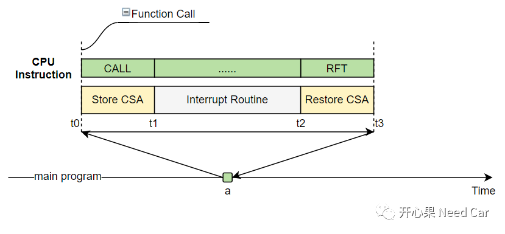
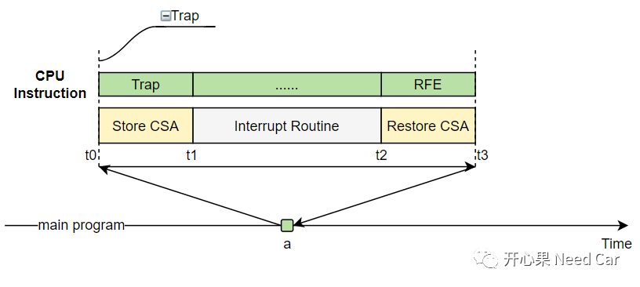
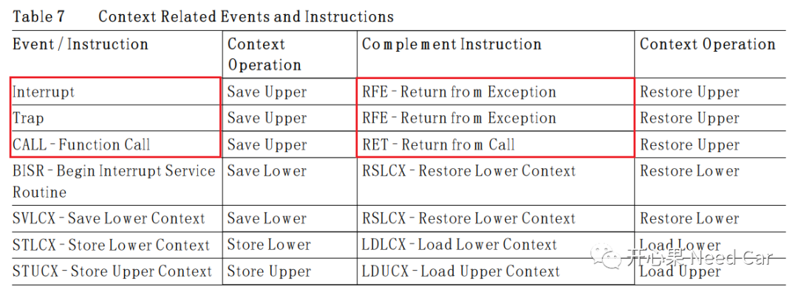
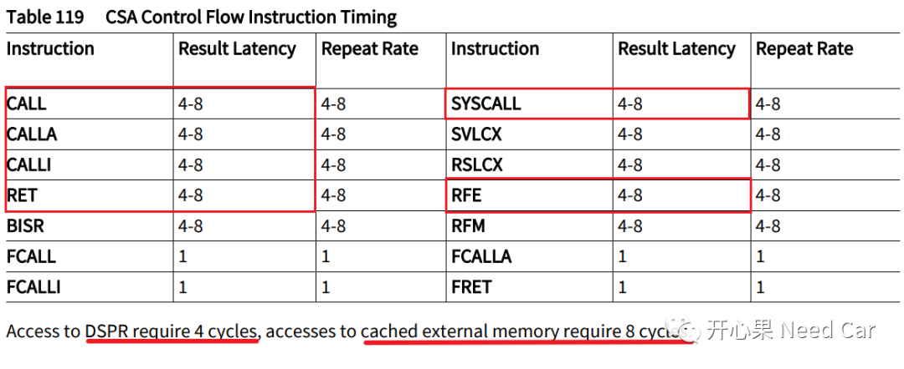
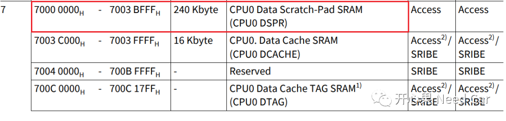

程序运行过程中，函数调用(Function Call)和中断(Interrupt)不可避免，如果程序异常，还会进入Trap程序。而Function Call、Interrupt、Trap均会涉及到一个操作：上下文(CSA：Context Save Areas)的保存和恢复。那CSA的保护和恢复需要花费多长时间呢？又会对程序运行产生何种影响呢？
提示：基于英飞凌tc397讨论
如下所示，主程序(main program)在正常执行的过程中：
t0时刻，主程序在a点发生Interrupt（这里的Interrupt是Event，不是Instruction），CPU会执行Interrupt指令进行CSA的保存；
t1时刻，程序进入Interrupt Routine执行；
t2时刻，Interrupt Routine执行完成，此时需要执行RFE(Return from Exception)指令，进行CSA恢复，返回之前的主程序位置（a点）；
t3时刻，继续执行a点之后的主程序。
如果主程序执行过程中，在a点发生函数调用。与Interrupt类似，也需要CSA的保存和恢复，只是执行的CPU Instruction不同，如下所示：

同理，主程序执行过程中，在a点发生Trap，也需要CSA的保存和恢复，只是执行的CPU Instruction不同（这里的Trap是Event），如下所示：


和Function Call、Interrupt、Trap相关的几个CSA操作指令，所需要的CPU clock为4、8。如果CSA所在的区域为DSPR(Data Scratch-Pad SRAM)，每次保存或者恢复CSA需要4个CPU clock周期；如果CSA区域在cached external memory，每次保存或者恢复CSA需要8个CPU clock周期，如下所示：


如果CPU获得的驱动频率为300MHz，每次Interrupt、Function Call、Trap，CSA的保存和恢复需要花费约26.67ns。
通信中，数据信息的处理可以使用Interrupt或者Polling，相对于Polling，使用Interrupt会有更多的CSA操作。
比如：CPU主频100MHZ，CAN通信中，某个节点使用Interrupt方式，接收100帧报文，发送100帧报文，CSA操作所需要花费的时间为：
（100 + 100）* 80ns = 16000ns = 16us。
中断对带宽利用率的影响
假设：CPU主频为300MHz，某设备通信速率为500Kbps，持续传输8 bytes数据，每次传输完成，产生一次中断。
传输数据用时：(8 * 8)/500000s = 0.000128s = 0.128ms = 128us，则带宽利用率 = 128 / (128 +5.334 ) ≈ 96.00%
如果设备通信速率为100MHz，则传输数据用时：(8 * 8)/100000000s = 0.00000064s = 0.00064ms = 0.64us，则带宽利用率 = 0.64 / (0.64 +5.334 ) ≈ 10.71%
可以看出，使用高速设备时，传输同样的数据量，中断的方式极大地降低了带宽利用率。而使用Polling方式，则可以近乎100%地使用带宽。
所以，实际项目中，需要结合实际考虑使用Interrupt还是Polling：
如果工况允许，优先考虑使用Polling方式；
使用Polling，会占用CPU的使用时间，因此可以考虑降低Polling任务的优先级；
使用Interrupt，如果通信速率高，可以尽可能地提高数据发送量。
而实际程序运行中，发生Interrupt时，上下文切换消耗的时间远不止几十纳秒，为什么呢？因为中断发生时，涉及到任务栈和中断栈的切换，OS状态判断等，OS需要保存的数据和操作不只有CSA，所以耗费的时间要比上述计算的时间更多。
举例：
1、OS需要判断堆栈是否溢出，假设中断栈的空间固定大小为ISR_STACK = 1K，某二类中断例程的大小为1.2K，显然中断栈空间不能加载该中断例程；
2、OS状态检查当前的中断类型是否是二类中断，一类中断不归OS管。
...
上述OS的操作均需要花费时间，所以，Interrupt发生时，耗费时间不单单是CSA花费的那点时间。
曾看到过这样的说法：一个二类Interrupt需要额外消耗“7~8um”时间用于信息的保存和恢复，对此，我不确定，如有读者清楚的可以给普及一下。如果每发生一次Interrupt，信息的保存和恢复需要7um，200次Interrupt，CSA操作需要耗时 = 200 * 7um = 1400um = 1.4ms，如果一个5ms的任务执行时间4ms，则该任务会就会被Delay，导致任务周期不准。所以，过多的中断操作会带来更多的时间消耗。

参考资料
SIMPLE TITLE
往期精彩回顾